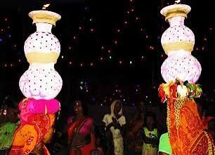

Janakpur
Explore the sacred city, beautiful architecture, Mithila culture and peaceful surroundings of Janakpur.
Explore Places →The Heart of Mithila
Janakpur is known for its religious heritage, Mithila culture, colorful traditions and beautiful places that attract visitors throughout the year.

A City Full of Culture
From temples and ponds to Mithila art and traditional celebrations, Janakpur offers a unique cultural experience.
During festivals, the city becomes especially vibrant with lights, decorations, music and gatherings.
Explore Culture →


Culture & Tradition
Janakpur is closely connected with Mithila traditions, art, clothing, festivals and community celebrations.
Mithila painting, traditional designs, music and colorful festivals add a unique identity to the region.
Discover Culture →
Experience the Beauty of Janakpur 🇳🇵
Explore its places, food, culture, family traditions and festival memories.
View Gallery →